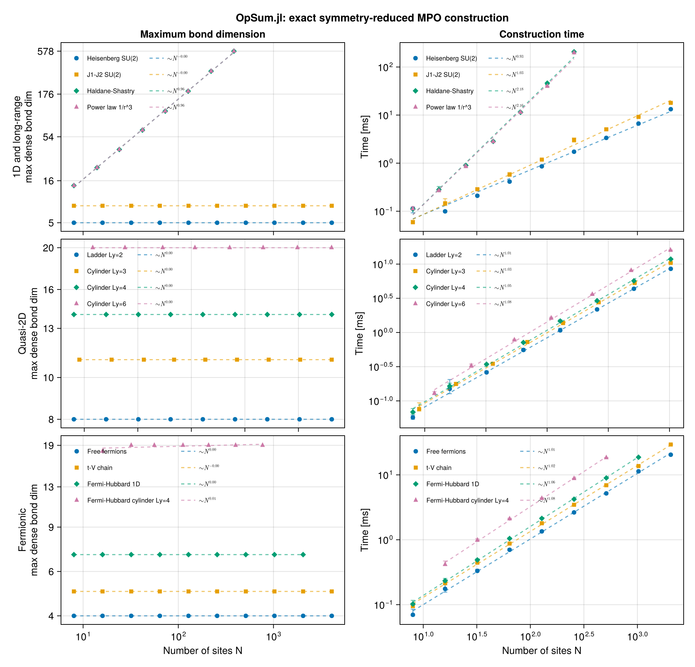

Fermions: free chains and the Hubbard model
Fermionic models need no special support here: TensorKit's graded (fermionic) sectors carry the anticommutation through the braiding, and the ITO machinery inherits it. In particular no Jordan–Wigner strings appear anywhere — the odd-parity charge flowing along the virtual bond does that bookkeeping for you.
There is exactly one thing to get right — the anticommutation sign — and this page is built around it, including who supplies it.
using OpSum: OpSum
include(joinpath(pkgdir(OpSum), "examples", "common.jl"))hermiticity_error (generic function with 1 method)A fermionic mode
FermionNumber is U1Irrep ⊠ FermionParity: particle number together with the parity that makes the braiding fermionic. A single spinless mode is empty or occupied:
V = Vect[FermionNumber](0 => 1, 1 => 1)
vac, occ = FermionNumber(0), FermionNumber(1)((Irrep[U₁](0) ⊠ FermionParity(0)), (Irrep[U₁](1) ⊠ FermionParity(1)))The operators are matrix units, derived rather than hard-coded. fermion_ops bundles the three of them so the convention has one definition:
F = fermion_ops(V)
c, cd, nh = F.c, F.cd, F.n # ``c``, ``c^\dagger``, ``\hat{n}``
BraidingStyle(sectortype(V))TensorKitSectors.Fermionic()The sign, and who supplies it
\[H = -t \sum_i \left( c^\dagger_i c_{i+1} + c^\dagger_{i+1} c_i \right)\]
A term is stored in site order, so couple(cd[i + 1], c[i]) cannot be kept as written: its two legs have to be swapped, and swapping two odd-parity legs costs
\[c^\dagger_{i+1} c_i = - c_i c^\dagger_{i+1}.\]
Under an abelian symmetry — every fermionic sector is one — couple does that swap and inserts the phase itself, so the Hamiltonian is written the way it is printed above. H' produces the same partner from the first half — the one operation that needs the physical spaces, since a letter's adjoint is a combination of the dual charge's letters, so it lives on the OperatorSum that opsum(lat, …) returns.
chain(N) = FiniteChain(V, N)
function hopping(N; t = 1.0)
return opsum(
chain(N),
-t * (couple(cd[i], c[i + 1]) + couple(cd[i + 1], c[i])) for i in 1:(N - 1)
)
end
N = 8
H = hopping(N)
forward = opsum(chain(N), -1.0 * couple(cd[i], c[i + 1]) for i in 1:(N - 1))
H ≈ forward + forward'trueNothing stops you from supplying a sign by hand, and then it is yours to get right: written in storage order the h.c. partner of $c^\dagger_i c_{i+1}$ is $-c_i c^\dagger_{i+1}$, and a + there is not a subtle error — the operator simply stops being hermitian, which is a cheap and very sharp check.
byhand(N; t = 1.0, sign = -1.0) = opsum(
chain(N),
-t * (couple(cd[i], c[i + 1]) + sign * couple(c[i], cd[i + 1])) for i in 1:(N - 1)
)
H ≈ byhand(N)true(
correct = hermiticity_error(H),
wrong = hermiticity_error(byhand(N; sign = +1.0)),
)(correct = 0.0, wrong = 2.0)Verification against the exact spectrum
For an open chain the single-particle energies are $\varepsilon_k = -2t\cos(k\pi/(N+1))$ and the many-body spectrum is every subset sum of them. Note that we compare eigenvalues, computed block by block — for fermionic sectors convert(Array, t) is not a well-defined operation (TensorKit will warn that it does not preserve the categorical structure), so the dense-matrix oracle used elsewhere is simply unavailable here.
function free_fermion_spectrum(N; t = 1.0)
ε = [-2t * cos(k * π / (N + 1)) for k in 1:N]
return sort(
[
sum(ε[k] for k in 1:N if (m >> (k - 1)) & 1 == 1; init = 0.0)
for m in 0:(2^N - 1)
]
)
end
spectrum(H) ≈ free_fermion_spectrum(N)trueThe MPO is lossless, and its bond dimension is independent of $N$ just as for the spin chains:
islossless(H)
res_free = build("free fermions", H)(Ws = SparseArrays.SparseMatrixCSC{OpSum.SiteOperator{TensorKitSectors.ProductSector{Tuple{TensorKitSectors.U1Irrep, TensorKitSectors.FermionParity}}}, Int64}[sparse([1, 1, 1], [1, 2, 3], OpSum.SiteOperator{TensorKitSectors.ProductSector{Tuple{TensorKitSectors.U1Irrep, TensorKitSectors.FermionParity}}}[SiteOperator{TensorKitSectors.ProductSector{Tuple{TensorKitSectors.U1Irrep, TensorKitSectors.FermionParity}}}(ITO((Irrep[U₁](0) ⊠ FermionParity(0)), n=0)), SiteOperator{TensorKitSectors.ProductSector{Tuple{TensorKitSectors.U1Irrep, TensorKitSectors.FermionParity}}}(ITO((Irrep[U₁](1) ⊠ FermionParity(1)), n=1)), SiteOperator{TensorKitSectors.ProductSector{Tuple{TensorKitSectors.U1Irrep, TensorKitSectors.FermionParity}}}(ITO((Irrep[U₁](-1) ⊠ FermionParity(1)), n=1))], 1, 3), sparse([1, 1, 1, 2, 3], [1, 2, 3, 4, 4], OpSum.SiteOperator{TensorKitSectors.ProductSector{Tuple{TensorKitSectors.U1Irrep, TensorKitSectors.FermionParity}}}[SiteOperator{TensorKitSectors.ProductSector{Tuple{TensorKitSectors.U1Irrep, TensorKitSectors.FermionParity}}}(ITO((Irrep[U₁](0) ⊠ FermionParity(0)), n=0)), SiteOperator{TensorKitSectors.ProductSector{Tuple{TensorKitSectors.U1Irrep, TensorKitSectors.FermionParity}}}(ITO((Irrep[U₁](1) ⊠ FermionParity(1)), n=1)), SiteOperator{TensorKitSectors.ProductSector{Tuple{TensorKitSectors.U1Irrep, TensorKitSectors.FermionParity}}}(ITO((Irrep[U₁](-1) ⊠ FermionParity(1)), n=1)), SiteOperator{TensorKitSectors.ProductSector{Tuple{TensorKitSectors.U1Irrep, TensorKitSectors.FermionParity}}}(ITO((Irrep[U₁](-1) ⊠ FermionParity(1)), n=1)), SiteOperator{TensorKitSectors.ProductSector{Tuple{TensorKitSectors.U1Irrep, TensorKitSectors.FermionParity}}}(-1.0 + 0.0im*ITO((Irrep[U₁](1) ⊠ FermionParity(1)), n=1))], 3, 4), sparse([1, 1, 1, 2, 3, 4], [1, 2, 3, 4, 4, 4], OpSum.SiteOperator{TensorKitSectors.ProductSector{Tuple{TensorKitSectors.U1Irrep, TensorKitSectors.FermionParity}}}[SiteOperator{TensorKitSectors.ProductSector{Tuple{TensorKitSectors.U1Irrep, TensorKitSectors.FermionParity}}}(ITO((Irrep[U₁](0) ⊠ FermionParity(0)), n=0)), SiteOperator{TensorKitSectors.ProductSector{Tuple{TensorKitSectors.U1Irrep, TensorKitSectors.FermionParity}}}(ITO((Irrep[U₁](1) ⊠ FermionParity(1)), n=1)), SiteOperator{TensorKitSectors.ProductSector{Tuple{TensorKitSectors.U1Irrep, TensorKitSectors.FermionParity}}}(ITO((Irrep[U₁](-1) ⊠ FermionParity(1)), n=1)), SiteOperator{TensorKitSectors.ProductSector{Tuple{TensorKitSectors.U1Irrep, TensorKitSectors.FermionParity}}}(ITO((Irrep[U₁](-1) ⊠ FermionParity(1)), n=1)), SiteOperator{TensorKitSectors.ProductSector{Tuple{TensorKitSectors.U1Irrep, TensorKitSectors.FermionParity}}}(-1.0 + 0.0im*ITO((Irrep[U₁](1) ⊠ FermionParity(1)), n=1)), SiteOperator{TensorKitSectors.ProductSector{Tuple{TensorKitSectors.U1Irrep, TensorKitSectors.FermionParity}}}(ITO((Irrep[U₁](0) ⊠ FermionParity(0)), n=0))], 4, 4), sparse([1, 1, 1, 2, 3, 4], [1, 2, 3, 4, 4, 4], OpSum.SiteOperator{TensorKitSectors.ProductSector{Tuple{TensorKitSectors.U1Irrep, TensorKitSectors.FermionParity}}}[SiteOperator{TensorKitSectors.ProductSector{Tuple{TensorKitSectors.U1Irrep, TensorKitSectors.FermionParity}}}(ITO((Irrep[U₁](0) ⊠ FermionParity(0)), n=0)), SiteOperator{TensorKitSectors.ProductSector{Tuple{TensorKitSectors.U1Irrep, TensorKitSectors.FermionParity}}}(ITO((Irrep[U₁](1) ⊠ FermionParity(1)), n=1)), SiteOperator{TensorKitSectors.ProductSector{Tuple{TensorKitSectors.U1Irrep, TensorKitSectors.FermionParity}}}(ITO((Irrep[U₁](-1) ⊠ FermionParity(1)), n=1)), SiteOperator{TensorKitSectors.ProductSector{Tuple{TensorKitSectors.U1Irrep, TensorKitSectors.FermionParity}}}(ITO((Irrep[U₁](-1) ⊠ FermionParity(1)), n=1)), SiteOperator{TensorKitSectors.ProductSector{Tuple{TensorKitSectors.U1Irrep, TensorKitSectors.FermionParity}}}(-1.0 + 0.0im*ITO((Irrep[U₁](1) ⊠ FermionParity(1)), n=1)), SiteOperator{TensorKitSectors.ProductSector{Tuple{TensorKitSectors.U1Irrep, TensorKitSectors.FermionParity}}}(ITO((Irrep[U₁](0) ⊠ FermionParity(0)), n=0))], 4, 4), sparse([1, 1, 1, 2, 3, 4], [1, 2, 3, 4, 4, 4], OpSum.SiteOperator{TensorKitSectors.ProductSector{Tuple{TensorKitSectors.U1Irrep, TensorKitSectors.FermionParity}}}[SiteOperator{TensorKitSectors.ProductSector{Tuple{TensorKitSectors.U1Irrep, TensorKitSectors.FermionParity}}}(ITO((Irrep[U₁](0) ⊠ FermionParity(0)), n=0)), SiteOperator{TensorKitSectors.ProductSector{Tuple{TensorKitSectors.U1Irrep, TensorKitSectors.FermionParity}}}(ITO((Irrep[U₁](1) ⊠ FermionParity(1)), n=1)), SiteOperator{TensorKitSectors.ProductSector{Tuple{TensorKitSectors.U1Irrep, TensorKitSectors.FermionParity}}}(ITO((Irrep[U₁](-1) ⊠ FermionParity(1)), n=1)), SiteOperator{TensorKitSectors.ProductSector{Tuple{TensorKitSectors.U1Irrep, TensorKitSectors.FermionParity}}}(ITO((Irrep[U₁](-1) ⊠ FermionParity(1)), n=1)), SiteOperator{TensorKitSectors.ProductSector{Tuple{TensorKitSectors.U1Irrep, TensorKitSectors.FermionParity}}}(-1.0 + 0.0im*ITO((Irrep[U₁](1) ⊠ FermionParity(1)), n=1)), SiteOperator{TensorKitSectors.ProductSector{Tuple{TensorKitSectors.U1Irrep, TensorKitSectors.FermionParity}}}(ITO((Irrep[U₁](0) ⊠ FermionParity(0)), n=0))], 4, 4), sparse([1, 1, 1, 2, 3, 4], [1, 2, 3, 4, 4, 4], OpSum.SiteOperator{TensorKitSectors.ProductSector{Tuple{TensorKitSectors.U1Irrep, TensorKitSectors.FermionParity}}}[SiteOperator{TensorKitSectors.ProductSector{Tuple{TensorKitSectors.U1Irrep, TensorKitSectors.FermionParity}}}(ITO((Irrep[U₁](0) ⊠ FermionParity(0)), n=0)), SiteOperator{TensorKitSectors.ProductSector{Tuple{TensorKitSectors.U1Irrep, TensorKitSectors.FermionParity}}}(ITO((Irrep[U₁](1) ⊠ FermionParity(1)), n=1)), SiteOperator{TensorKitSectors.ProductSector{Tuple{TensorKitSectors.U1Irrep, TensorKitSectors.FermionParity}}}(ITO((Irrep[U₁](-1) ⊠ FermionParity(1)), n=1)), SiteOperator{TensorKitSectors.ProductSector{Tuple{TensorKitSectors.U1Irrep, TensorKitSectors.FermionParity}}}(ITO((Irrep[U₁](-1) ⊠ FermionParity(1)), n=1)), SiteOperator{TensorKitSectors.ProductSector{Tuple{TensorKitSectors.U1Irrep, TensorKitSectors.FermionParity}}}(-1.0 + 0.0im*ITO((Irrep[U₁](1) ⊠ FermionParity(1)), n=1)), SiteOperator{TensorKitSectors.ProductSector{Tuple{TensorKitSectors.U1Irrep, TensorKitSectors.FermionParity}}}(ITO((Irrep[U₁](0) ⊠ FermionParity(0)), n=0))], 4, 4), sparse([1, 1, 2, 3, 4], [1, 2, 3, 3, 3], OpSum.SiteOperator{TensorKitSectors.ProductSector{Tuple{TensorKitSectors.U1Irrep, TensorKitSectors.FermionParity}}}[SiteOperator{TensorKitSectors.ProductSector{Tuple{TensorKitSectors.U1Irrep, TensorKitSectors.FermionParity}}}(ITO((Irrep[U₁](1) ⊠ FermionParity(1)), n=1)), SiteOperator{TensorKitSectors.ProductSector{Tuple{TensorKitSectors.U1Irrep, TensorKitSectors.FermionParity}}}(ITO((Irrep[U₁](-1) ⊠ FermionParity(1)), n=1)), SiteOperator{TensorKitSectors.ProductSector{Tuple{TensorKitSectors.U1Irrep, TensorKitSectors.FermionParity}}}(ITO((Irrep[U₁](-1) ⊠ FermionParity(1)), n=1)), SiteOperator{TensorKitSectors.ProductSector{Tuple{TensorKitSectors.U1Irrep, TensorKitSectors.FermionParity}}}(-1.0 + 0.0im*ITO((Irrep[U₁](1) ⊠ FermionParity(1)), n=1)), SiteOperator{TensorKitSectors.ProductSector{Tuple{TensorKitSectors.U1Irrep, TensorKitSectors.FermionParity}}}(ITO((Irrep[U₁](0) ⊠ FermionParity(0)), n=0))], 4, 3), sparse([1, 2, 3], [1, 1, 1], OpSum.SiteOperator{TensorKitSectors.ProductSector{Tuple{TensorKitSectors.U1Irrep, TensorKitSectors.FermionParity}}}[SiteOperator{TensorKitSectors.ProductSector{Tuple{TensorKitSectors.U1Irrep, TensorKitSectors.FermionParity}}}(ITO((Irrep[U₁](-1) ⊠ FermionParity(1)), n=1)), SiteOperator{TensorKitSectors.ProductSector{Tuple{TensorKitSectors.U1Irrep, TensorKitSectors.FermionParity}}}(-1.0 + 0.0im*ITO((Irrep[U₁](1) ⊠ FermionParity(1)), n=1)), SiteOperator{TensorKitSectors.ProductSector{Tuple{TensorKitSectors.U1Irrep, TensorKitSectors.FermionParity}}}(ITO((Irrep[U₁](0) ⊠ FermionParity(0)), n=0))], 3, 1)], secs = Vector{TensorKitSectors.ProductSector{Tuple{TensorKitSectors.U1Irrep, TensorKitSectors.FermionParity}}}[[(0, 0), (1, 1), (-1, 1)], [(0, 0), (1, 1), (-1, 1), (0, 0)], [(0, 0), (1, 1), (-1, 1), (0, 0)], [(0, 0), (1, 1), (-1, 1), (0, 0)], [(0, 0), (1, 1), (-1, 1), (0, 0)], [(0, 0), (1, 1), (-1, 1), (0, 0)], [(1, 1), (-1, 1), (0, 0)], [(0, 0)]], D = 4, Ddense = 4, time = 4.5268e-5)Adding a density–density interaction
\[H = -t \sum_i \left( c^\dagger_i c_{i+1} + \mathrm{h.c.} \right) + V \sum_i \hat{n}_i \hat{n}_{i+1}\]
The $t$–$V$ model. Both $\hat{n}$ factors are single letters, so this is an ordinary two-site term.
function tV_chain(N; t = 1.0, Vint = 2.0)
return opsum!(
hopping(N; t),
(Vint * couple(nh[i], nh[i + 1]) for i in 1:(N - 1))
)
end
H_tV = tV_chain(N)
res_tV = build("t-V chain", H_tV)
islossless(H_tV)truePairing: a symmetry that is not U(1)
\[H = \sum_i \left[ -t \left( c^\dagger_i c_{i+1} + \mathrm{h.c.} \right) + \Delta \left( c^\dagger_i c^\dagger_{i+1} + \mathrm{h.c.} \right) \right]\]
The Kitaev chain. Pairing creates two particles at once, so particle number is not conserved — only its parity. A Vect[FermionNumber] site would refuse c†ᵢc†ⱼ outright, because the charges cannot fuse to the unit sector. Grade by FermionParity alone and they can: 1 ⊗ 1 = 0.
This is worth being explicit about, because it is a choice the model makes and the package only follows: the symmetry you grade the site by is the symmetry you get to exploit.
Vp = Vect[FermionParity](0 => 1, 1 => 1)
odd, even = FermionParity(1), FermionParity(0)
cp = matrixunit(Vp, even, odd)
cdp = matrixunit(Vp, odd, even)
function kitaev(N; t = 1.0, Δ = 0.5)
bonds = [(i, i + 1) for i in 1:(N - 1)]
return opsum(
FiniteChain(Vp, N),
(-t * (couple(cdp[i], cp[j]) + couple(cdp[j], cp[i])) for (i, j) in bonds),
(Δ * (couple(cdp[i], cdp[j]) + couple(cp[j], cp[i])) for (i, j) in bonds),
)
end
H_kitaev = kitaev(N)
build("Kitaev chain", H_kitaev)
islossless(H_kitaev)trueThe pairing terms are free: the same D = 4 as the hopping chain alone, because the pair channel reuses the bond index the hopping channel already needs. And the signs are still nobody's problem but couple's — hermiticity is the sharpest check on them:
hermiticity_error(H_kitaev) < 1.0e-12trueAt $\Delta = t$ and zero chemical potential the chain is the Majorana fixed point; the spectrum is the honest check against any external reference:
spectrum(kitaev(6; t = 1.0, Δ = 1.0))[1:4]4-element Vector{Float64}:
-4.999999999999999
-4.999999999999999
-3.0000000000000018
-3.0000000000000018The Fermi–Hubbard model
\[H = -t \sum_{i,\sigma} \left( c^\dagger_{i\sigma} c_{i+1,\sigma} + \mathrm{h.c.} \right) + U \sum_i \hat{n}_{i\uparrow} \hat{n}_{i\downarrow}\]
A spinful site has four states, and there $c^\dagger_\uparrow$ is unavoidably a sum of two alphabet letters (it maps both $|0\rangle \to |\uparrow\rangle$ and $|\downarrow\rangle \to |\uparrow\downarrow\rangle$) whose relative sign is a basis convention.
The standard way to sidestep that entirely is to give each spin-orbital its own site. Then every operator is a single letter again, and the on-site interaction $\hat{n}_{i\uparrow}\hat{n}_{i\downarrow}$ becomes an ordinary two-site term between the two orbitals of the same physical site. We interleave them, $(i,\sigma) \mapsto 2(i-1) + \sigma$, so each physical site is contiguous.
orbital(i, σ) = 2 * (i - 1) + σ # σ = 1 for ↑, 2 for ↓
function hubbard(Nsites; t = 1.0, U = 4.0)
hop = [
-t * (
couple(cd[orbital(i, σ)], c[orbital(i + 1, σ)]) +
couple(cd[orbital(i + 1, σ)], c[orbital(i, σ)])
)
for i in 1:(Nsites - 1) for σ in 1:2
]
int = [
U * couple(nh[orbital(i, 1)], nh[orbital(i, 2)])
for i in 1:Nsites
]
return opsum(chain(2Nsites), hop, int)
end
Nsites = 6
H_hub = hubbard(Nsites)
res_hub = build("Hubbard 1D", H_hub)
islossless(H_hub)trueChecking it against two exactly solvable limits
At $U = 0$ the model is two independent species of free fermions, so the spectrum is every subset sum over the two copies of the single-particle levels:
let Ns = 3
H0 = hubbard(Ns; U = 0.0)
ε = vcat(
[-2 * cos(k * π / (Ns + 1)) for k in 1:Ns],
[-2 * cos(k * π / (Ns + 1)) for k in 1:Ns],
)
exact = sort(
[
sum(ε[k] for k in 1:(2Ns) if (m >> (k - 1)) & 1 == 1; init = 0.0)
for m in 0:(2^(2Ns) - 1)
]
)
spectrum(H0) ≈ exact
endtrueAt $t = 0$ nothing moves, so the energy just counts doubly-occupied sites in units of $U$:
let Ns = 3, U = 4.0
Ht = hubbard(Ns; t = 0.0, U)
sort(unique(round.(spectrum(Ht); digits = 8)))
end4-element Vector{Float64}:
0.0
4.0
8.0
12.0Bond dimension
As for every other local model, the Hubbard bond dimension saturates:
for Ns in (4, 6, 8, 12)
r = build("hub", hubbard(Ns); quiet = true)
println(" sites=$(rpad(Ns, 3)) orbitals=$(rpad(2Ns, 3)) D=$(rpad(r.D, 3)) D_dense=$(r.Ddense)")
end sites=4 orbitals=8 D=7 D_dense=7
sites=6 orbitals=12 D=7 D_dense=7
sites=8 orbitals=16 D=7 D_dense=7
sites=12 orbitals=24 D=7 D_dense=7The spin-orbital encoding leaves a visible fingerprint on the profile of the bond dimension: it alternates between consecutive bonds, because a bond cutting within a physical site (between its ↑ and ↓ orbitals) carries the half-finished on-site interaction, while a bond cutting between physical sites does not.
let Ns = 8
_, secs = irrep_mpo(hubbard(Ns))
[densedim(secs, b) for b in eachindex(secs)]
end16-element Vector{Int64}:
4
6
7
6
7
6
7
6
7
6
7
6
7
6
4
1Hubbard on a cylinder
Nothing about the construction is one-dimensional: swapping the chain's bond list for a cylinder's gives the quasi-2D Hubbard model. The physical sites form the cylinder, and each carries its two spin-orbitals.
function hubbard_cylinder(Lx, Ly; t = 1.0, U = 4.0)
Nsites = Lx * Ly
hop = [
-t * (
couple(cd[orbital(i, σ)], c[orbital(j, σ)]) -
couple(c[orbital(i, σ)], cd[orbital(j, σ)])
)
for (i, j) in cylinder_bonds(Lx, Ly) for σ in 1:2
]
int = [U * couple(nh[orbital(i, 1)], nh[orbital(i, 2)]) for i in 1:Nsites]
return opsum(chain(2Nsites), hop, int)
end
for Lx in (2, 4, 6, 8)
r = build("hub cyl", hubbard_cylinder(Lx, 4); quiet = true)
println(" $(Lx)x4 cylinder: sites=$(rpad(4Lx, 3)) orbitals=$(rpad(8Lx, 3)) D_dense=$(r.Ddense)")
end 2x4 cylinder: sites=8 orbitals=16 D_dense=18
4x4 cylinder: sites=16 orbitals=32 D_dense=19
6x4 cylinder: sites=24 orbitals=48 D_dense=19
8x4 cylinder: sites=32 orbitals=64 D_dense=19The bond dimension saturates at 19 once the cylinder is longer than two columns, and stays there out to hundreds of sites — the same length-independence seen for the spin cylinders.
Hubbard with SU(2) spin
The hardest case in the series: non-abelian and fermionic at once. Instead of two spin-orbital sites per physical site, one site carries the whole four-dimensional Fock space, graded by $(n, j, \text{parity})$ — particle number, total spin, and fermion parity:
const Hub = ProductSector{Tuple{U1Irrep, SU2Irrep, FermionParity}}
Vh = Vect[Hub]((0, 0, 0) => 1, (1, 1 // 2, 1) => 1, (2, 0, 0) => 1)
vac, sng, dbl = Hub((0, 0, 0)), Hub((1, 1 // 2, 1)), Hub((2, 0, 0))
dim.((vac, sng, dbl))(1, 2, 1)That 2 is the whole story of this section. The singly-occupied sector is the spin-½ doublet, so it carries quantum dimension 2, and matrixunit — which builds $|out⟩⟨in|$ and therefore needs one-dimensional sectors — cannot address it:
try
matrixunit(Vh, sng, vac) # would be "create one electron"
catch e
println(sprint(showerror, e))
endArgumentError: matrixunit requires one-dimensional sectors, got (Irrep[U₁](1) ⊠ Irrep[SU₂](1/2) ⊠ FermionParity(1)) and (Irrep[U₁](0) ⊠ Irrep[SU₂](0) ⊠ FermionParity(0))Note what is not refused: the refusal is per sector, not per space. The doubly-occupied sector has dimension 1, so the interaction term is an ordinary matrixunit:
nupndn = matrixunit(Vh, dbl, dbl)
length(nupndn)1For the hopping, project is the route — the general one, and the reason project exists. Write the bond as a TensorMap in the fusion-tree basis: four reduced matrix elements, the $\sqrt 2$ being the Clebsch-Gordan factor of the doubly-occupied channel.
function hubbard_su2_hop()
t = zeros(ComplexF64, Vh ⊗ Vh ← Vh ⊗ Vh)
leg(a, b, c) = only(fusiontrees((a, b), c, (false, false)))
three = Hub((3, 1 // 2, 1))
t[leg(vac, sng, sng), leg(sng, vac, sng)] .= 1
t[leg(sng, dbl, three), leg(dbl, sng, three)] .= -1
t[leg(vac, dbl, dbl), leg(sng, sng, dbl)] .= sqrt(2)
t[leg(sng, sng, dbl), leg(dbl, vac, dbl)] .= sqrt(2)
return t
end
function hubbard_su2(N; t = 1.0, U = 4.0)
hop = hubbard_su2_hop()
B = project(-t * (hop + hop')) # one projection; `B[i]` places it on sites i, i + 1
return opsum(
FiniteChain(Vh, N),
(B[i] for i in 1:(N - 1)),
(U * nupndn[i] for i in 1:N),
)
end
H_hub2 = hubbard_su2(4)
build("Hubbard SU(2), N=4", H_hub2)
islossless(H_hub2)trueMatrix elements written by hand deserve an independent check, and there is a good one available: the spin-orbital encoding above is the same physics through a completely different route — single letters placed with couple, rather than a block handed to project. Comparing spectra is what makes the Clebsch-Gordan factors trustworthy rather than merely transcribed.
let Nsites = 3
a = spectrum(hubbard_su2(Nsites))
b = spectrum(hubbard(Nsites)) # `hubbard` counts sites, its chain has one site per orbital
(; dim = length(a), matches = a ≈ b)
end(dim = 64, matches = true)And the payoff for the extra symmetry, against the spin-orbital encoding of the same model:
let Nsites = 4
su2 = build("Hubbard SU(2)", hubbard_su2(Nsites); quiet = true)
orb = build("Hubbard spin-orbital", hubbard(Nsites); quiet = true)
println(" SU(2) spin: N=$Nsites sites D=$(su2.D) D_dense=$(su2.Ddense)")
println(" spin-orbital: N=$(2Nsites) orbitals D=$(orb.D) D_dense=$(orb.Ddense)")
end SU(2) spin: N=4 sites D=6 D_dense=10
spin-orbital: N=8 orbitals D=7 D_dense=7Both models are in benchmark/ShowcaseModels.jl, so these bond dimensions are pinned by the test suite rather than only appearing here.
Scaling
julia --project=benchmark scripts/plot_benchmarks.jl --run --sweep full
This page was generated using Literate.jl.